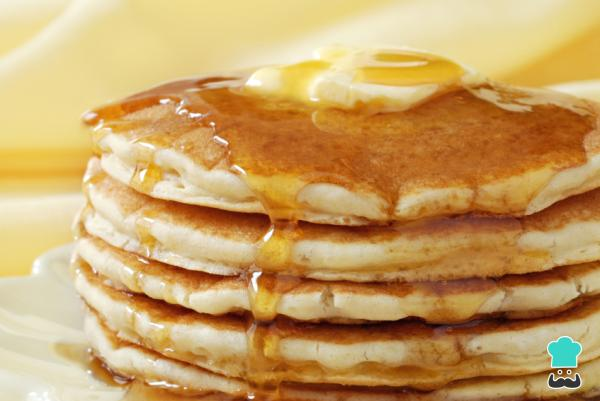

Panquecas
Panquecas

Description
Los panqueques son un desayuno ideal y muy nutritivo, pues contienen leche y huevos, ambos ingredientes cargados
de proteínas, vitaminas y nutrientes esenciales para mantener nuestra salud en perfectas condiciones. En
RecetasGratis.net queremos enseñarte una forma muy simple de prepararlos, sigue leyendo y aprende a elaborar
panquecas fáciles y rápidas.
Ingridients
- ½ taza de Harina leudante
- ½ taza de Leche (120 mililitros)
- 2 cucharadas soperas de Azúcar
- 1 cucharada sopera de Mantequilla
- 1 unidad de Huevo
Steps
-
Para realizar esta receta de panquecas, mezcla el huevo, la leche y el azúcar. Puedes utilizar una licuadora,
batidora, varillas eléctricas o manuales, lo que te sea más cómodo.
-
Cuando estén bien integrados, agrega la mantequilla y sigue batiendo. Por último, incorpora la harina poco a
poco y sin dejar de remover.
-
Una vez tengas la masa de panqueques lista, pon a calentar un poco de mantequilla en una sartén. Cuando esté
caliente, vierte una cucharada de la mezcla y cocínala a fuego lento.
-
En cuanto empiecen a salir pequeñas burbujas por todo el pancake, dale la vuelta y cocínalo por ese lado. Cuando
las panquecas estén listas, puedes servirlas con miel por encima, chocolate fundido, sirope de fresa, dulce de
leche, lo que más te guste.
Go Back